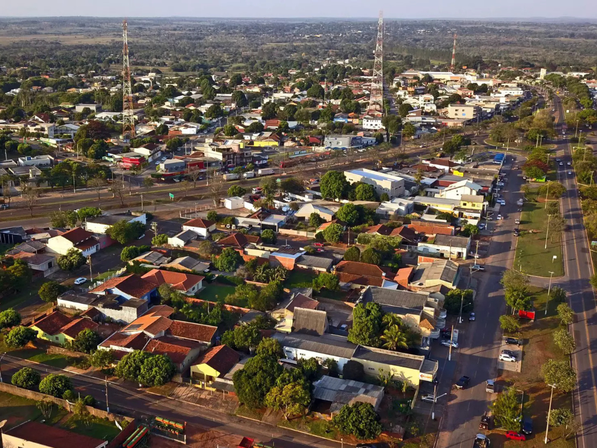

O Mato Grosso do Sul é um santuário ecológico mundial, abrigando a maior parte do Pantanal e o paraíso das águas cristalinas em Bonito. Sua cultura é marcada pela forte influência das fronteiras paraguaia e boliviana, visível no hábito do tereré e na culinária de fronteira. Economicamente, o estado é uma potência do agronegócio, equilibrando vastas áreas de pecuária e lavoura com a preservação de biomas únicos.
